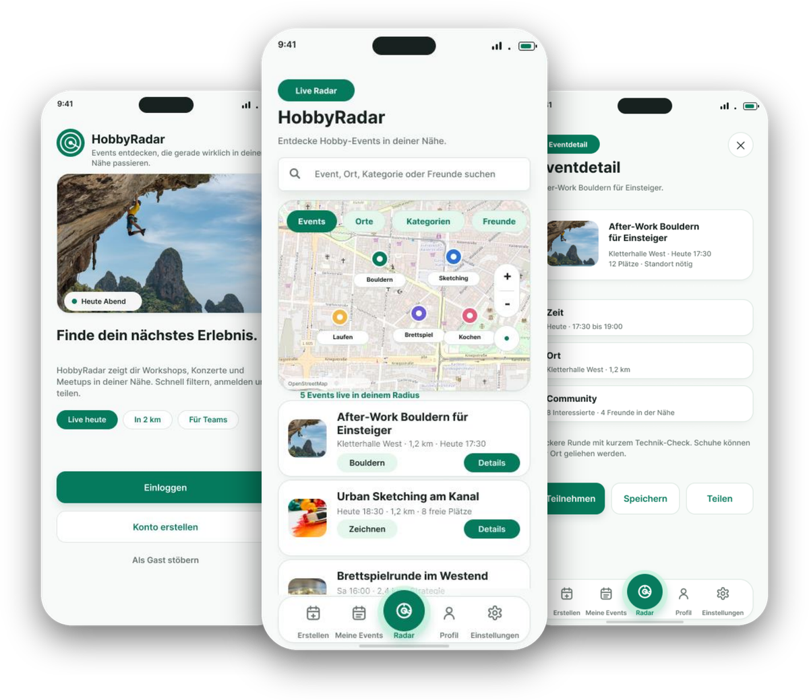
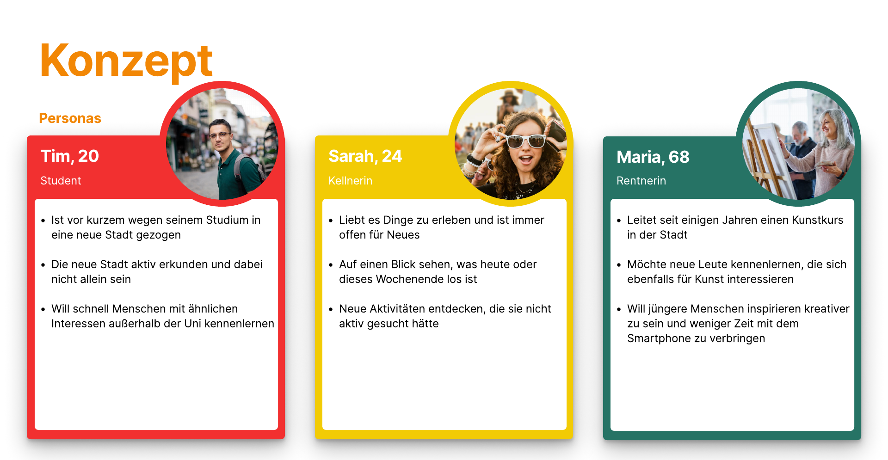
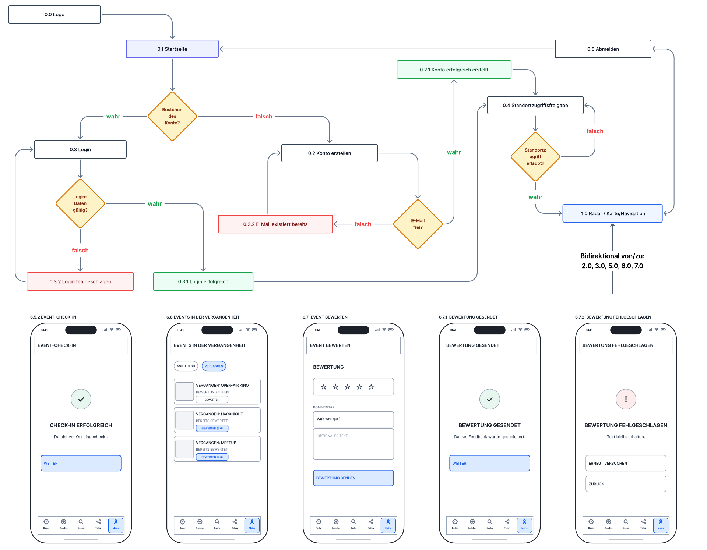
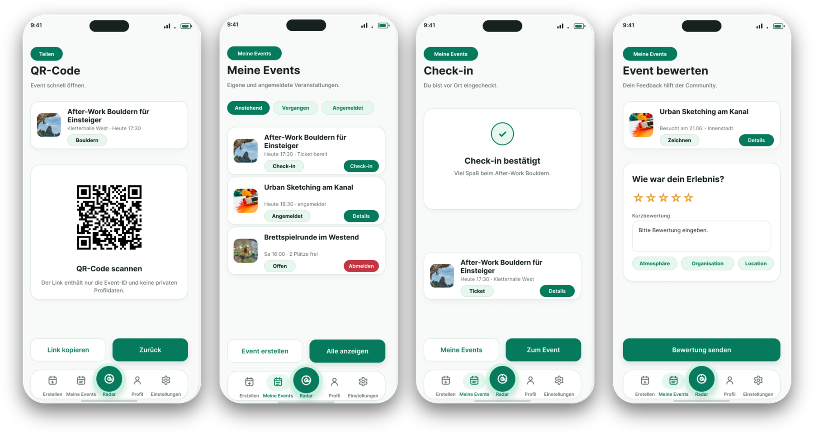
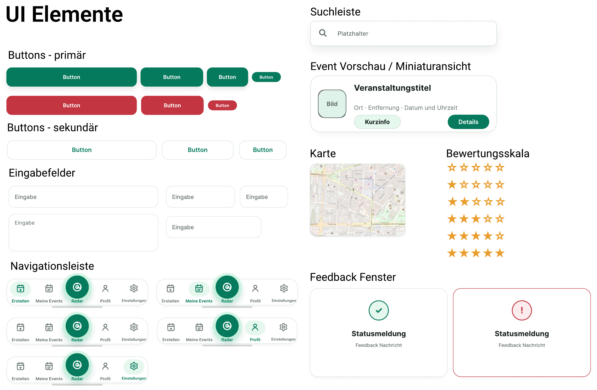

Hobby
Radar
Location-based Social App • UI/UX Case Study
Endloses Scrollen verbindet nicht automatisch – oft bleibt es bei passivem Konsum. HobbyRadar dreht das um: Eine Radar-Karte zeigt Hobby-Events im eigenen Umkreis, und die App ist darauf ausgelegt, dass man sie schnell wieder verlässt, um sich wirklich zu treffen. Entstanden ist das Konzept im Modul Medienprojekt 1 an der HKA, in einem Team aus vier Personen, von der ersten Idee bis zum klickbaren Prototyp.
- Rolle Recherche, Entwürfe, Styleguide, Prototyp
- Team 4 Personen, SoSe 2026
- Tools Figma

Startseite · Radar · Eventdetail
Ausgangslage: Vom Feed zum echten Treffen
Viele junge Menschen verbringen sehr viel Zeit am Smartphone und fühlen sich trotzdem einsam. Social Media verliert zunehmend das Soziale und wird zum passiven Scrollen. Gleichzeitig wünschen sich viele, weniger online zu sein. Zwei Personas haben unsere Entscheidungen geleitet: Tim (20), der neu in der Stadt ist und Anschluss sucht, und Maria (68), die einen Kunstkurs leitet, aber zu wenige Interessierte erreicht. Beide brauchen dasselbe: einen einfachen Weg vom Bildschirm zu einem echten Treffen.
Der Weg zum Prototyp
01. Research & Konzept
Konkurrenzanalyse (Meetup, Tinder, Instagram), Zielgruppen, Personas und Customer Journeys für Teilnehmende und Planende.
Mein Anteil: Recherche, Brainstorming02. Flow & Wireframes
Die App-Logik als Flussdiagramm, dazu Wireframes für jeden Screen, inklusive Erfolgs- und Fehlerzuständen.
Mein Anteil: Flows von der Anmeldung bis zur Bewertung03. Mockups & Styleguide
Jeder von uns entwarf eine eigene Version der App. Aus allen Entwürfen entstand das finale Design, dazu ein Styleguide.
Mein Anteil: eigener Entwurf inkl. Logo, Styleguide (gemeinsam)04. Prototyp
Ein klickbarer Figma-Prototyp mit Animationen und Transitions. Die Screens haben wir im Team aufgeteilt.
Mein Anteil: ca. 20 Screens, Präsentationen
Research: Personas

Flussdiagramm & Wireframes
Mein Part: Nach der Anmeldung
Im Prototyp habe ich die Screens vom Moment der erfolgreichen Anmeldung bis zur Bewertung umgesetzt. Hier entscheidet sich, ob aus einem Radar-Treffer wirklich ein Treffen wird. Zu jedem Flow gehören Erfolgs- und Fehlerzustände, etwa „Check-in fehlgeschlagen“ oder „Bewertung fehlgeschlagen“, damit Nutzer:innen nie ohne Rückmeldung bleiben.

Teilen · Meine Events · Check-in · Bewerten
Teilen
Events lassen sich per QR-Code oder Link teilen. Der Link enthält nur die Event-ID und keine privaten Profildaten.
Verwalten
Eigene und angemeldete Events an einem Ort, filterbar nach anstehend, vergangen und angemeldet.
Check-in
Vor Ort bestätigt der Check-in die Teilnahme. Das ist der Moment, in dem aus dem Radar ein echtes Treffen wird.
Bewerten
Nach dem Event gibt es Sterne, eine Kurzbewertung und Tags wie Atmosphäre oder Organisation. Das hilft der Community.
Styleguide: Ein Look für alle Screens
Damit vier Entwürfe zu einer App werden, haben wir gemeinsam einen Styleguide erarbeitet: Farben, Typografie (Inter) und wiederverwendbare Komponenten wie Buttons, Eingabefelder, Navigationsleiste und Event-Karte. Ruhige, helle Flächen schaffen Sicherheit, Grün markiert Handlungen.

UI-Komponenten
Ergebnis & Ausblick
01. Ergebnis
Entstanden ist ein vollständiger, klickbarer Figma-Prototyp mit Animationen und Transitions, vom Onboarding über die Radar-Karte bis zur Bewertung.
02. Learnings
Mehrere Entwürfe nebeneinander machen das Ergebnis besser: Unsere finale Version hat von jedem Entwurf etwas mitgenommen. Außerdem habe ich gelernt, wie wichtig es ist, ein Projekt wirklich gemeinsam zu tragen.
03. Ausblick
Als Nächstes würden wir Onboarding, Karte, Anmeldung und Event-Erstellung mit echten Nutzer:innen testen und danach in Karlsruhe pilotieren. Erfolgskriterien: die Zeit bis zum passenden Event, die Anmeldequote und ob man nach einem Event wiederkommt.